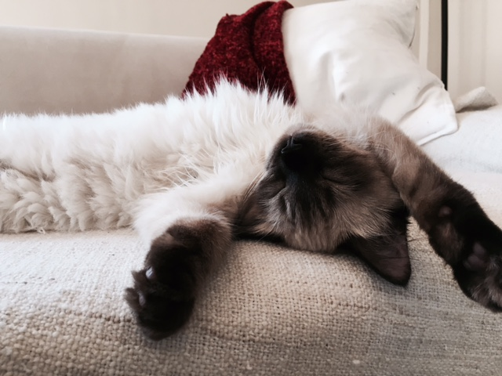

Carmen is a Himalyan kitten born in November, 2015. She was found at the Oakland Animal Shelter when she was 12 weeks old. Her adoptive parents took her and her sister Frida to live the luxurious Lake Merrit community where she spends her days people watching, eating and sleeping. her favorite hobbies are playing with her hoo-manssreenivasa.neeladhuri, fly patrol, and sleeping in peculiar positions. She can always be found sleeping upside down, head back, belly exposed without a care in the world...
